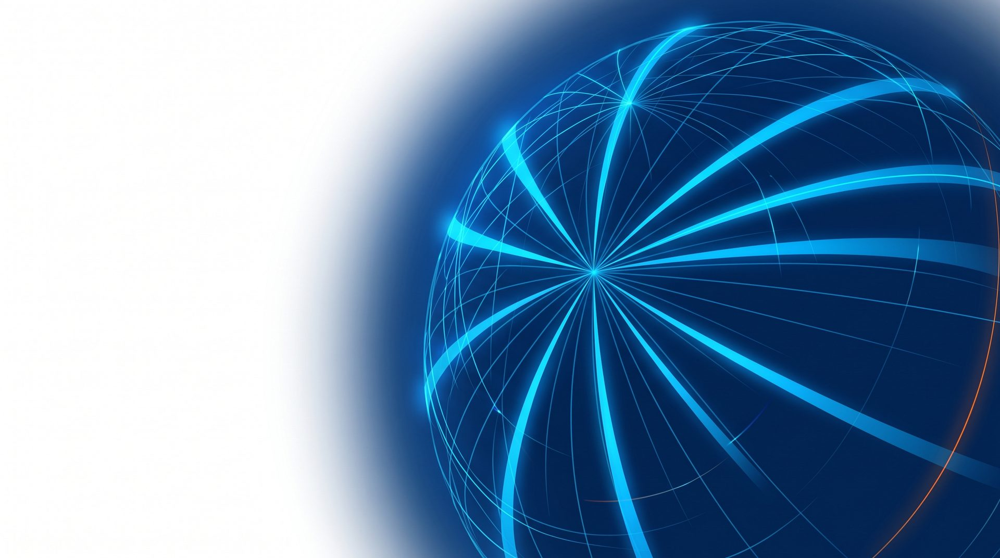
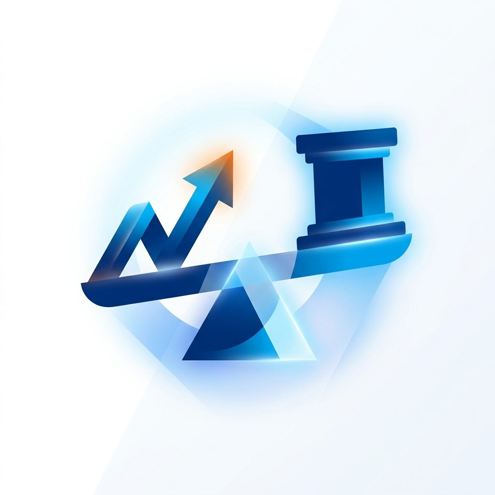

元大優質收益成長多重資產基金｜商品結構說明（打樣）
0:00 / 0:00

商品結構說明 ‧ 打樣版
元大優質收益成長
多重資產基金
（本基金之配息來源可能為本金）
重成長 ‧ 廣收益 ‧ 找優質
風險報酬等級 RR3 ‧ 元大證券投資信託股份有限公司
問題
高成長與高波動，變成同一個常態
人工智慧的投資機會，正從
美國擴散到全球
。
但同一段時間裡，市場的
波動度也同步墊高
。
過去可以分開處理 —— 股票追成長、債券壓波動；現在
純股票太顛簸，純債券又跟不上
。
解方
把三件事放進同一個組合
成
重成長
用股票與 ETF 去追趨勢
收
廣收益
債券搭配掩護性買權，收權利金
質
找優質
刻意不碰高風險的收益來源
這三件事互相牽制，也互相補位。
廣收益 ‧ 核心機制
常態性掩護性買權
用生活化的說法 ——
1
您持有一間房子，並跟對方簽約：未來他可以用
約定價格
跟您買。
2
為了這個權利，他
先付您一筆訂金
—— 這就是權利金收入的來源。
3
但房價若大漲超過約定價，上漲的那一段，您就參與不到了。
掩護性買權
並非不存在跌價風險
，且可能犧牲部分上漲機會，影響基金淨值表現。
廣收益 ‧ 標的選擇
為什麼鎖定長天期美國公債？
標的
存續期間
波動度
權利金收益率
債券殖利率
合計收益率
長天期美國公債
本基金關注
11.5 年
較高
16.00%
4.96%
20.96%
投資等級公司債
6.8 年
中
7.39%
5.14%
12.53%
非投資級公司債
3 年
較低
1.29%
6.98%
8.27%
權利金收益率最高，加上殖利率，
合計約百分之二十一
。
但關鍵是 —— 權利金最高，正因為它的
價格波動最大
。
以上為收益率試算，
非基金配息率，亦非報酬率
。
風險與取捨
三件必須說清楚的事
1
風險等級與實際結構有落差
風險報酬等級 RR3，但股票部位有
八成集中在資訊科技
，體感波動請以更保守的心理準備看待。
2
配息的來源與代價
配息
可能來自本金
；而賣出買權，等於在多頭行情裡系統性放棄一部分上檔。
3
成本不低
經理費 1.5% ＋ 保管費 0.25% ＝ 每年內扣
1.75%
，是主動管理每年都必須跨過的門檻。
打樣說明
以上是打樣版
完整版會再展開
選股邏輯
‧
預計配置
‧
費用結構
‧
適配對象
。
方向如果沒問題，我們就接著把完整版做出來。
投資一定有風險，基金投資有賺有賠，申購前應詳閱公開說明書。
本基金之配息來源可能為本金；任何涉及由本金支出的部分，可能導致原始投資金額減損。本基金採用掩護性買權策略，收取權利金收入，但可能犧牲部分上漲機會，影響基金淨值表現。基金非存款或保險，無受存款保險或其他保障機制之保障。

▶
▶
播放
⏮
上一段
⏭
下一段
⟲
重播
0:00 / 0:00
部分配音檔尚未產生（將以預估秒數播放靜音）
場景 1